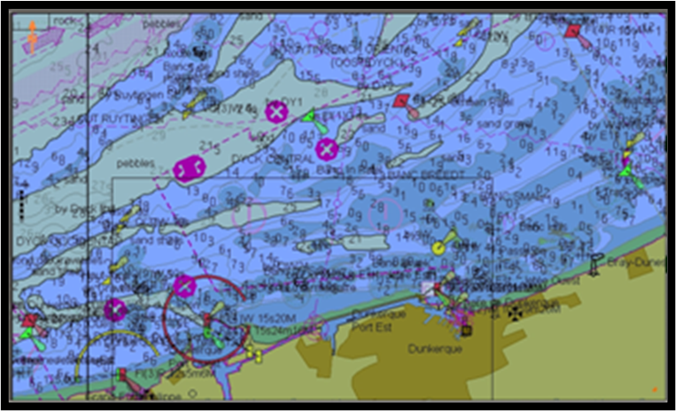
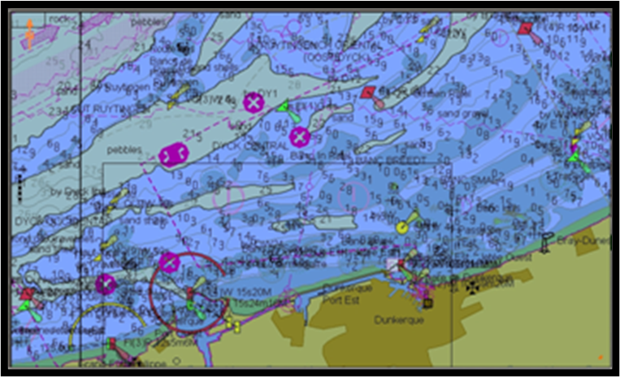

航海仪器
电子海图
1. 电子海图基础

电子海图（EC-Electronic chart）：用数字形式描述海域地理信息和航海信息为主的海图；其内容以海域要素为主，详细表示航行障碍物、助航标志、港口设施、潮流、海流等要素，陆地着重表示沿海的航行目标和主要地貌、地物。电子海图可在屏幕上显示，所以也称为“屏幕海图”
光栅电子海图（Raster Charts）：以栅格形式表示的数字海图，是通过对纸质海图的光学扫描形成的数据信息文件，是以像素点的排列反映出海图中的要素。光栅电子海（Raster Charts）可看作是纸质海图的复制品。使用者不能对光栅电子海图进行查询式操作（如查询某一海图要素特征，或隐去某类海图要素等）。因此，光栅电子海图常被称为“非智能化电子海图”。
矢量电子海图（Vector Charts）：将数字化的海图信息分类存储的数据库，海域中的每个要素是以点、线、面等几何图元的形式存储在电子海图数据文件中。矢量电子海图（Vector Charts）：使用者可以选择性地查询、显示和使用数据，和其他船舶系统相结合提供诸如警戒区、危险区的自动报警等功能。因此，矢量电子海图常被称为“智能化电子海图”
1.1电子海图标准

标准化的光栅电子海图——光栅扫描航海图（Raster Navigational Chart，RNC）：符合IHO《光栅航海图产品规范》（S-61）的光栅电子海图，是由国家海道测量局或其授权出版的纸质海图通过数字复制而成的图像文件，可以是单一海图也可以是系列海图。
标准化矢量电子海图——电子航海图（ Electronic Navigational Chart，ENC）：是内容、结构和格式均标准化的数据库，该数据库由政府或政府授权的海道测量机构或其他相关政府机构发布并符合IHO标准，供ECDIS使用。ENC包含安全航行所需的所有海图信息，并可包含纸质海图上没有但可视为安全航行所需的补充信息（例如航路指南）。
1.2 ECDIS
国际海事组织定义的标准电子海图系统即电子海图显示与信息系统（ Electronic Chart Display and Information System ，ECDIS）。 ECDIS是一种航行信息系统，如果这个系统具有适当的备用配置，便能被接受为符合1974年SOLAS公约中第5章第19和27条关于改正至最新的海图的配备要求。该系统可有选择地显示系统电子航海图中的信息以及从导航传感器获得的位置信息以帮助航海人员进行航线设计和航行监控，并且能够按要求显示其它与航海相关的信息。

ECDIS实质上是一个具有高性能的内、外部接口符合S-52标准要求的船用计算机系统。
中央处理器、内存和显存容量应保证显示一幅电子海图所需时间不超过5秒。
海图显示区的最小有效尺寸应为270mm×270mm。
海图显示、海图作业、海图改正、定位及导航、雷达信息处理、航路监视、航海信息咨询、航行记录
通过类型认证的ECDIS使用改正至最新的官方ENC（官方海道测量部门提供的符合IHO S-57标准，具体内容、显示方式、颜色和符号的使用等要符合IHO S-52规范）并配备适当的备用配置，可以取代纸质海图。
1.3 数据模型和结构

1.4 显示和识别

 

1.5 数据更新
- 全自动更新：不必任何人员介入即可使更新信息从分发人处直接传入ECDIS，例如通过广播或者INTERNET完成传送。
- 半自动更新：需要人员介入才能在传输介质和ECDIS之间建立通道（例如，插入更新盘，或者建立电话通讯线路）的更新方法。
- 手动改正：由操作人员手工将信息键入ECDIS
2. 电子海图的使用
2.1 海图显示


载入方式：自动载入、手动载入
显示背景：白天、黄昏、夜晚
运动模式：真运动、相对运动
显示方向：North up, Head up, Course up
比例尺变换
海区变换
内容选择
2.2 航海测量
基本测量：位置、方位、距离
航迹推算、定位
2.3 与导航设备联用
本船显示

雷达

AIS

测深仪、风速仪、Navtex、自动舵、VDR

2.4 参数设定
2.5 航线设计
航行监控
ECDIS应有能力保存前12小时的记录以及航次航迹的记录。
船员可以查询已有的航行记录，但不能不能伪造、修改记录。
航行记录
3. 电子海图的注意事项
3.1 误差
\[数据误差\begin{cases} 海图数据误差 \\ 坐标系误差 \\ 数据不一致问题 \end{cases}\]
\[设备误差\begin{cases} ECDIS设备误差 \\ 外部传感器误差 \\ 数据延时 \end{cases}\]
\[系统使用不当\begin{cases} 1.忽视海图超比例尺显示 \\ 2.忽视显示控制 \\ 3.参数设置不当 \\ 4.缺乏分析接受显示船位 \\ 5.忽视假显示 \\ 6.不清楚不同的矢量稳定模式 \\ 7.航线检验结果的盲目信赖 \\ 8.操作错误 \end{cases}\]
3.2 正确配置系统
应使用权威机构发行的电子航海图。注意及时改正
正确设置ECDIS系统
正确解读相关信息与提示
软件及时更新，硬件保持维护
传感器正确连接
及时进行性能检测和测试
应急电源：从一电源转换到另一电源或不超过45s的断电时应不需要手动重新启动设备。
配置备用设备
具有一部使用独立电源、与具备连续定位能力传感器连接的ECDIS。同时，满足整个航次所需的改正到最新的最新版纸质海图。